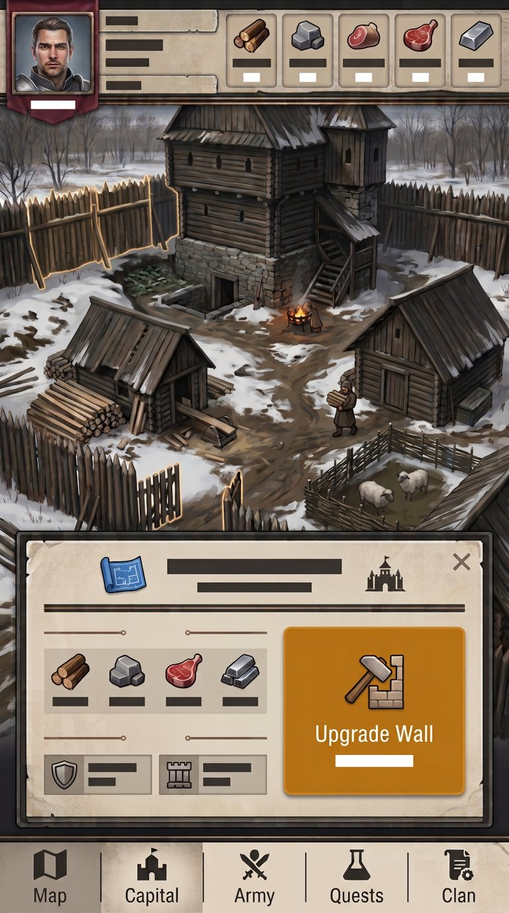
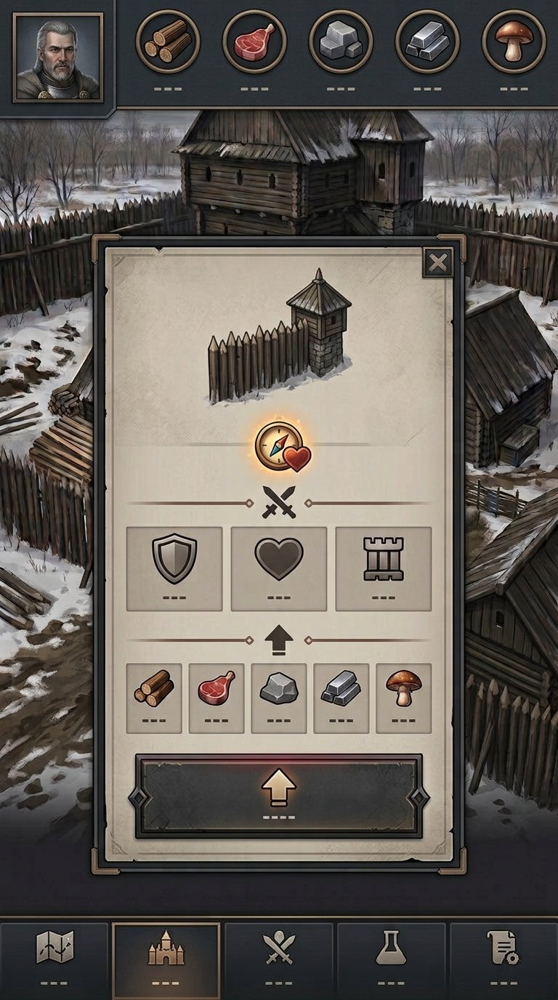
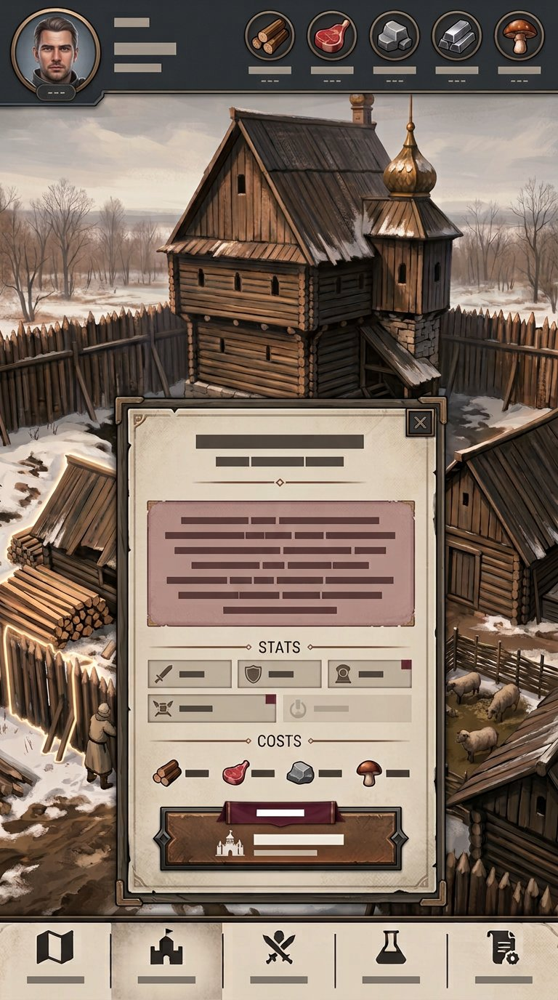
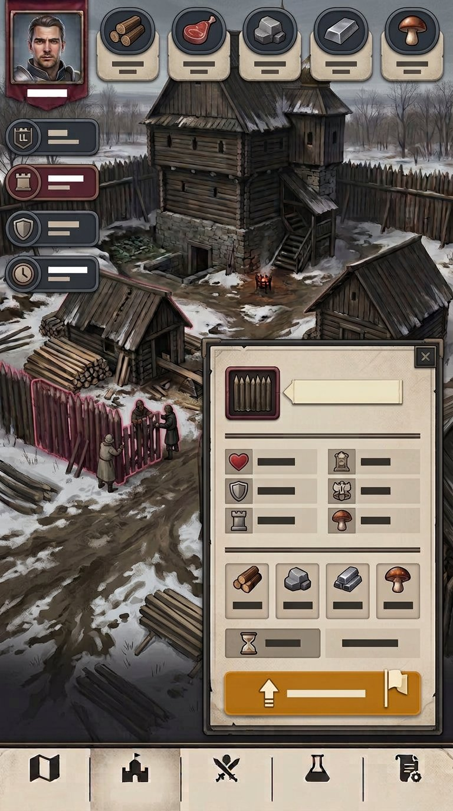
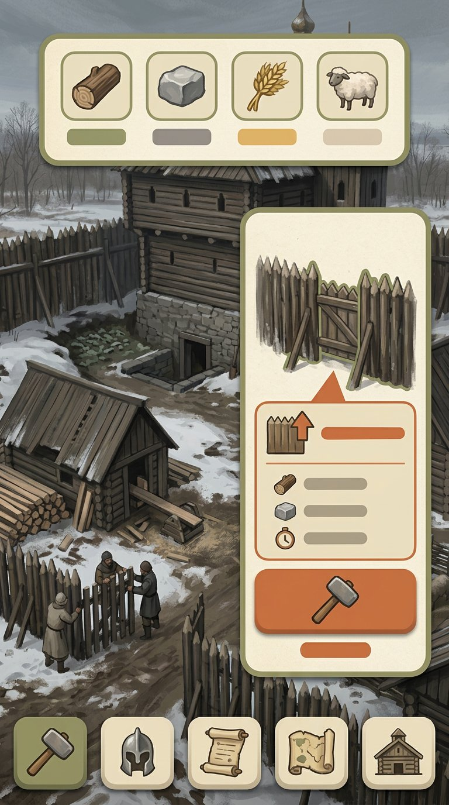
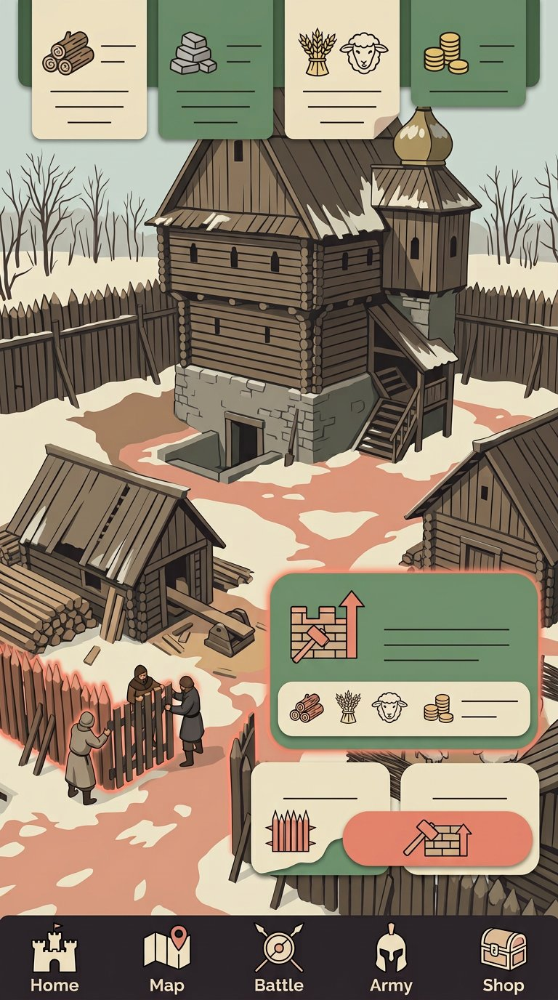
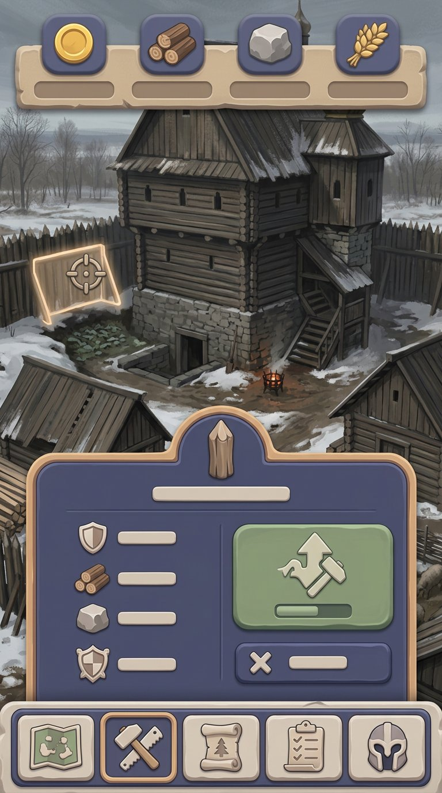
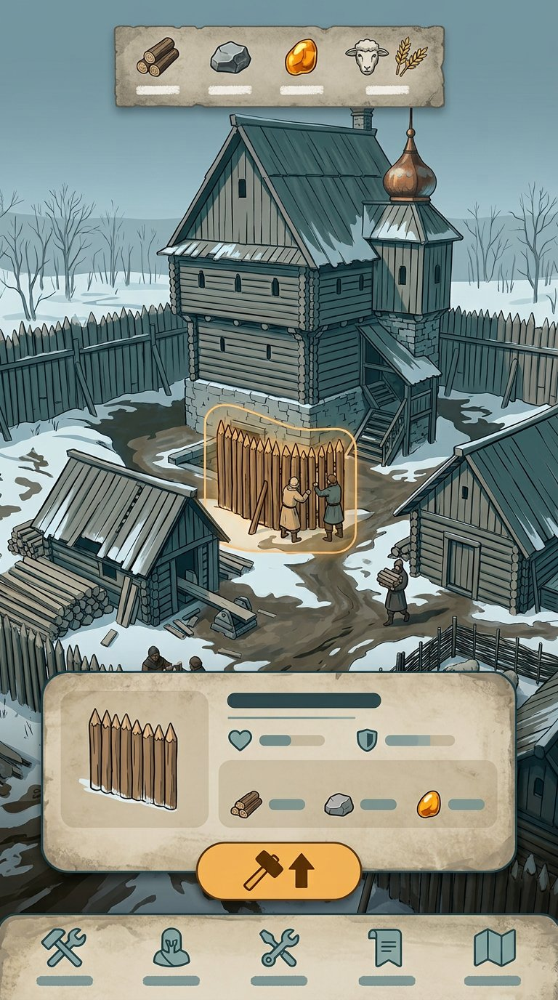
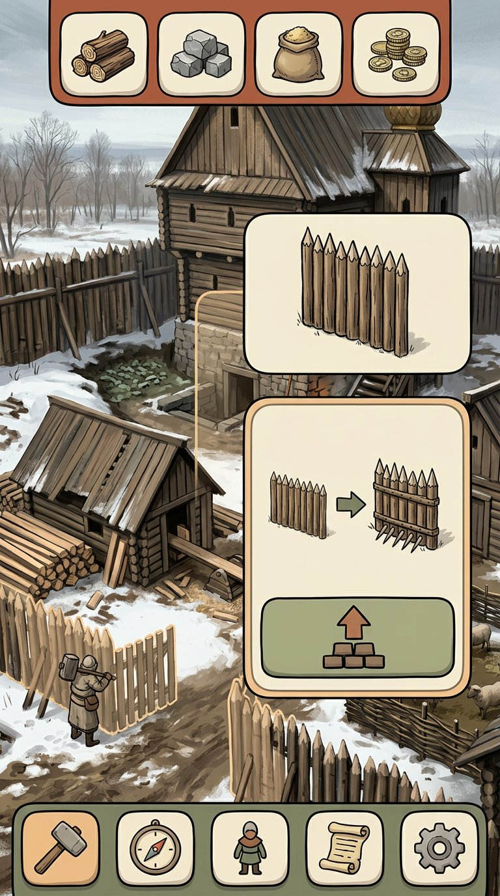

{kind=link}

Айвори и бордо
Светлая панель на тёмном фоне; мягкие края добавляют тепла строгой основе.
The Dead Lords · UI study · round 03
Вы отметили концепты 03 и 09 прошлого раунда. Здесь четыре готовых варианта развивают их камень, графит и бордовые акценты, а пять новых направлений пробуют мягкую иллюстративную подачу: гуашь, бумажные формы, тактильные панели, контурный рисунок и книжную иллюстрацию.
Сочетание светлых каменных карточек, графитовых панелей и небольшого бордового акцента; формы слегка мягче и дружелюбнее.

Светлая панель на тёмном фоне; мягкие края добавляют тепла строгой основе.

Плотный тёмный HUD, светлые блоки и округлённые ресурсные ячейки.

Центральная карточка сохраняет двор на виду и собирает улучшение в одном месте.

Боковые статусы и отдельная панель улучшения; скругления смягчают плотный экран.
Ещё один самостоятельный концепт на основе выбранных вами цветовых и UI-ориентиров.
Новые палитры и способы рисовки: лёгкая мультяшность здесь проявляется в форме панелей, иконках и иллюстрации, а не в детском тоне.

Мягкая живописная подача, бумажные карточки и нарисованные ресурсные значки.

Слоистые формы, зелёный и коралловый акценты; двор выглядит как иллюстрация.

Тактильные панели и объёмные иконки без глянцевого или игрушечного эффекта.

Чистые обводки, холодный фон и тёплый акцент на главном действии.

Книжная иллюстрация и тёплые контуры сохраняют серьёзную основу, но делают подачу живее.
{kind=link}
{kind=link}
{kind=link}
{kind=link}
{kind=link}
{kind=link}
{kind=link}
{kind=link}